準備しよう
2-1 AppSheetへのアクセス方法
AppSheet には複数の方法でアクセスできます。ここでは最も一般的な 2つの方法 を紹介します。
方法A：AppSheet公式サイトから直接アクセス
ブラウザ（Google Chrome 推奨）で以下のURLにアクセスします。
https://www.appsheet.com
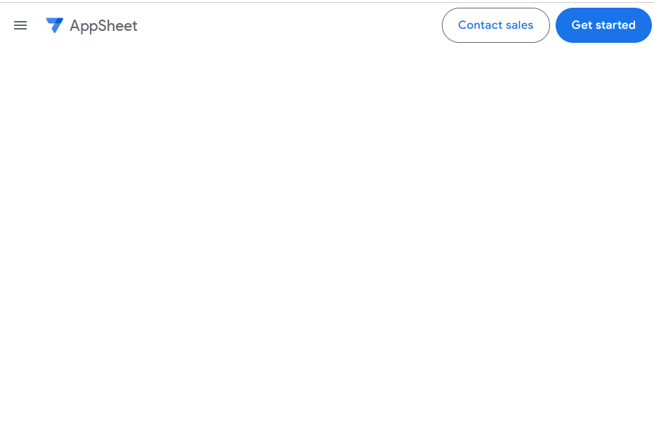
画面右上の 「Get started」 をクリックします。
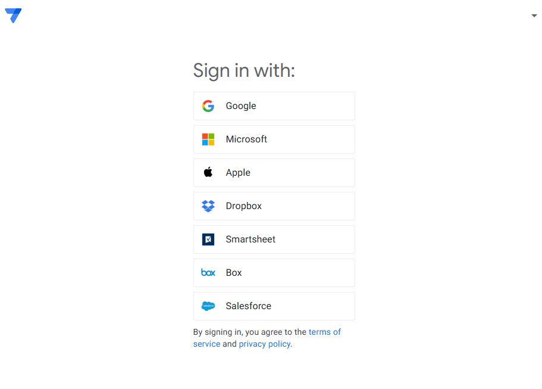
社内の Google Workspace アカウント（例：yourname@company.co.jp）または、ご自身の Google アカウント でログインします。
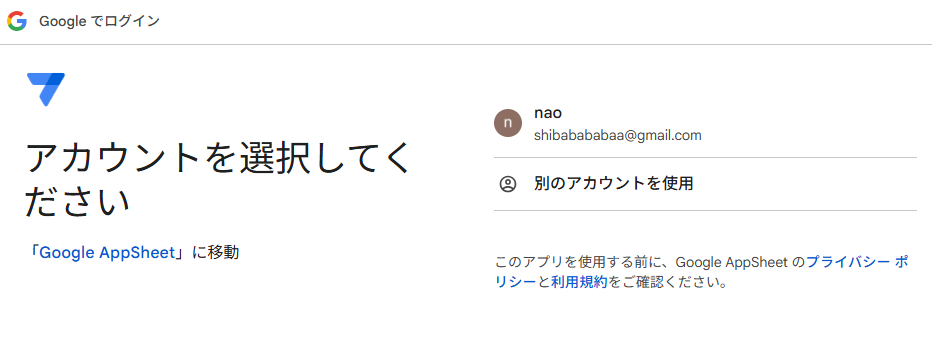
ログイン後、AppSheet の 「My Apps」画面（ダッシュボード）が表示されます。ここがアプリ管理の起点になります。
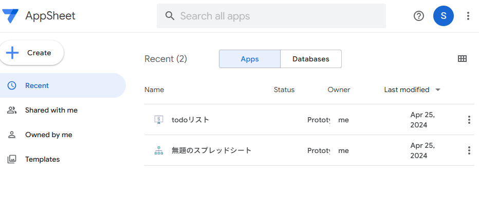
方法B：Googleスプレッドシートの拡張機能からアクセス
Google スプレッドシートを開きます（データが入ったシートでも、空のシートでもOK）。
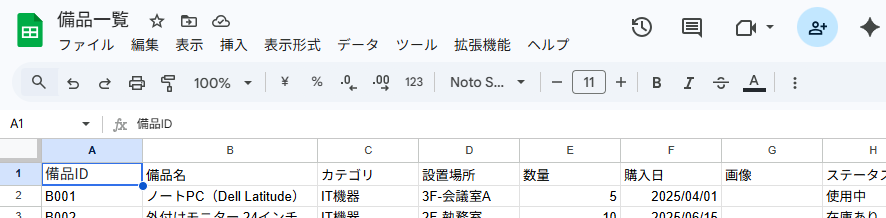
メニューバーから 「拡張機能」→「AppSheet」→「アプリを作成」 を選択します。
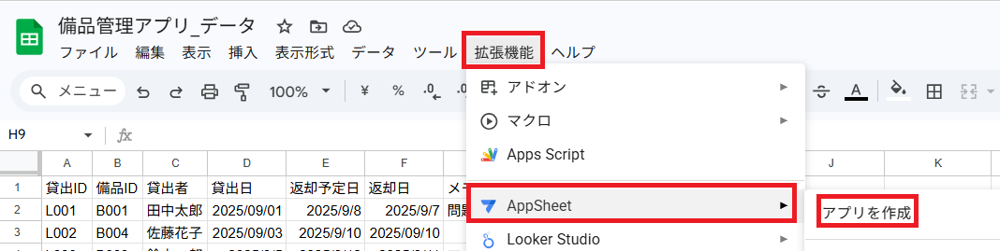
自動的に AppSheet のエディタ画面が開き、そのスプレッドシートのデータをもとにアプリが生成されます。
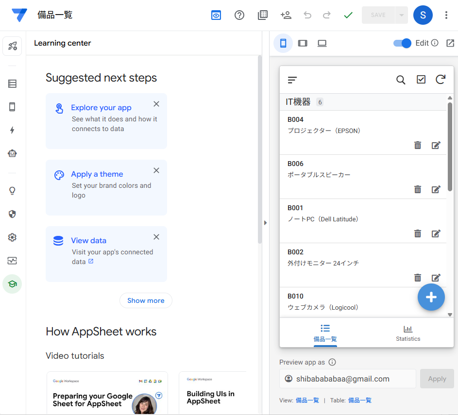
2-2 AppSheetの画面構成を理解する
AppSheet で実際にアプリを作る前に、エディタ（開発画面）の構成を把握しておきましょう。 大きく分けて 3つのエリア で構成されています。
（テーブル設定、ビュー設定、アクション設定など） ② 設定エリア（中央）
設定を変更すると即座に反映されます ③ プレビュー（右側）
■ 3つのエリアの役割
| 番号 | エリア名 | 役割 |
|---|---|---|
| ① | 左ナビゲーション | Data（データ）、App（画面設計）、Actions（アクション）、Automation（自動化）、Security（セキュリティ）など、設定したい機能を選択するメニュー |
| ② | 設定エリア（中央） | 左ナビで選んだ機能の詳細設定を行う作業エリア。テーブルのカラム設定やビューのカスタマイズなど、ほとんどの操作はここで行います |
| ③ | ライブプレビュー（右側） | 作成中のアプリをリアルタイムで確認できるプレビュー画面。設定を変更すると即座に反映されるので、完成イメージを確認しながら作業できます |
■ 左ナビゲーションの主なメニュー
| アイコン | メニュー名 | 用途 | 使用する章 |
|---|---|---|---|
| 📊 | Data | テーブル・カラムの設定、データ型の変更、リレーションの構築 | 第3章 |
| 🎨 | App > Views | 画面レイアウト（一覧・詳細・フォーム等）の作成・カスタマイズ | 第4章 |
| 🎨 | App > Format Rules | 条件付き書式（例：「使用中」の行を赤く表示、期限切れを強調など） | 中級編 |
| ⚡ | Actions | ボタンアクションの作成（データ変更・画面遷移・外部リンクなど） | 第5章 |
| 🤖 | Automation | 自動処理（通知メール、ステータス変更など）の設定 | 第5章・中級編 |
| 🔒 | Security | ユーザーの認証方式・アクセス権限の設定 | 第6章 |
| ⚙️ | Settings | アプリ名・テーマ・言語・パフォーマンスなどの全般設定 | 第4章 |
2-3 Googleスプレッドシートでデータを準備する
いよいよ実際にデータを準備します。第1章で紹介した「備品一覧」と「貸出履歴」の2つのシートを、Googleスプレッドシートに作成しましょう。
1. 新しいスプレッドシートを作成する
Google ドライブ（https://drive.google.com）を開きます。
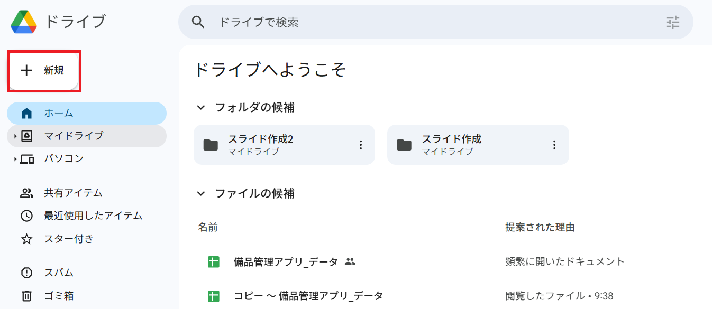
左上の 「+ 新規」→「Google スプレッドシート」→「空白のスプレッドシート」 をクリックします。
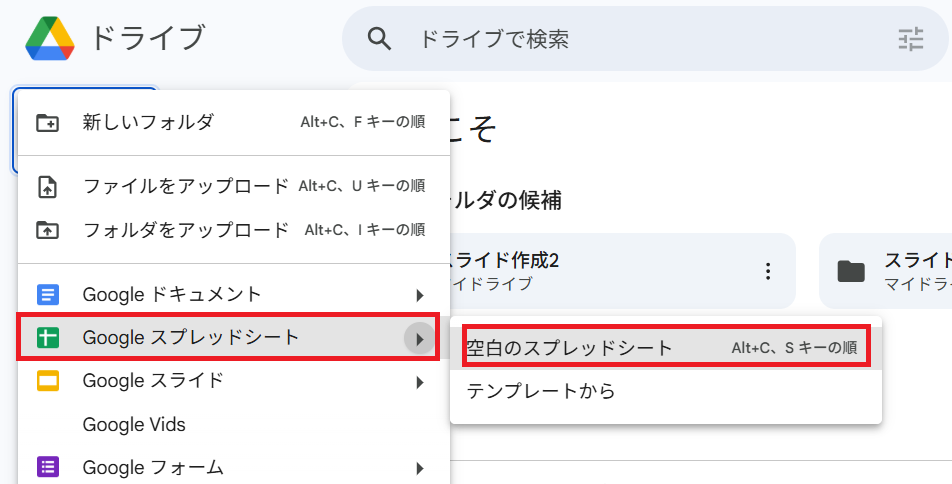
ファイル名を 「備品管理アプリ_データ」 に変更します（左上のタイトル部分をクリックして入力）。
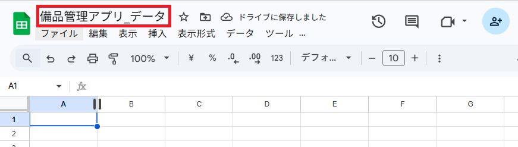
2. シート①「備品一覧」を作成する
画面下部のシートタブ名「シート1」をダブルクリックして、「備品一覧」に名前を変更します。
下の枠内をすべて選択してコピーし、スプレッドシートの A1セル に貼り付けてください。
1行目がヘッダー、2行目以降がサンプルデータになります。
備品ID 備品名 カテゴリ 設置場所 数量 購入日 画像 ステータス B001 ノートPC（Dell Latitude） IT機器 3F-会議室A 5 2025/04/01 在庫あり B002 外付けモニター 24インチ IT機器 2F-執務室 10 2025/06/15 在庫あり B003 ホワイトボード（大） オフィス家具 4F-会議室B 2 2024/11/20 在庫あり B004 プロジェクター（EPSON） IT機器 3F-会議室A 1 2024/08/10 使用中 B005 デスクチェア（オカムラ） オフィス家具 2F-執務室 15 2025/01/15 在庫あり B006 ポータブルスピーカー IT機器 1F-受付 3 2025/03/20 在庫あり B007 シュレッダー 事務機器 2F-執務室 2 2023/09/01 在庫あり B008 カラープリンター（Canon） IT機器 3F-コピー室 1 2024/02/14 使用中 B009 会議用マイク（Jabra） IT機器 4F-会議室B 3 2025/07/01 在庫あり B010 収納キャビネット オフィス家具 2F-執務室 6 2023/04/10 在庫あり
貼り付け後、以下のスクリーンショットのように A列〜H列 × 2〜11行目 にデータが入っていることを確認してください。画像（G列）は空欄のままでOKです。
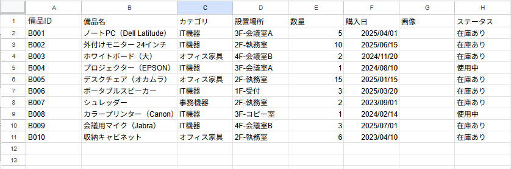
A列〜H列 × 1〜11行目（ヘッダー＋データ10行）が表示されている状態" style="width:100%; border-radius:8px; border:1px solid #d4dce8;">3. シート②「貸出履歴」を作成する
下の枠内をすべて選択してコピーし、スプレッドシートの A1セル に貼り付けてください。
貸出ID 備品ID 貸出者 貸出日 返却予定日 返却日 メモ L001 B001 田中太郎 2025/09/01 2025/09/08 2025/09/07 問題なし L002 B004 佐藤花子 2025/09/03 2025/09/10 2025/09/10 L003 B009 鈴木一郎 2025/09/05 2025/09/12 2025/09/11 マイク1本のみ L004 B001 山田美咲 2025/09/10 2025/09/17 出張用に持出し L005 B008 田中太郎 2025/09/12 2025/09/19 カラー印刷のため L006 B003 佐藤花子 2025/09/14 2025/09/15 2025/09/15 研修で使用 L007 B007 高橋健一 2025/09/15 2025/09/22 L008 B004 伊藤めぐみ 2025/09/18 2025/09/25 プレゼン用
貼り付け後、A列〜G列 × 2〜9行目 にデータが入っていることを確認してください。返却日（F列）が空欄の行は「まだ返却されていない」ことを意味します。
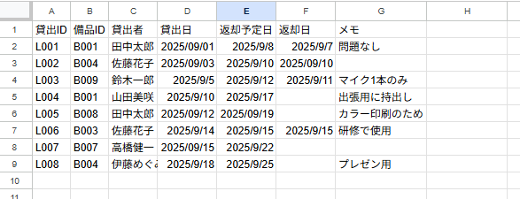
4. データの確認
データ入力が完了したら、以下のチェックリストで確認しましょう。
- スプレッドシートのファイル名を「備品管理アプリ_データ」に設定した
- シート名が「備品一覧」「貸出履歴」の2つになっている
- 各シートの1行目にヘッダー行（項目名）が入力されている
- 「備品一覧」に最低3行以上のサンプルデータがある
- 「貸出履歴」に最低2行以上のサンプルデータがある
- セルの結合を使っていない
- データの途中に空白行がない
すべてにチェックが入れば、データの準備は完了です。次のスクリーンショットのような状態になっているはずです。
以上で第2章は終了です。AppSheet へのアクセス方法、エディタの画面構成、そしてアプリの土台となるデータの準備が完了しました。
次の第3章では、このスプレッドシートをもとに AppSheet でアプリを自動生成し、カラムの型設定やテーブルのリレーションなど、アプリの骨格を構築していきます。